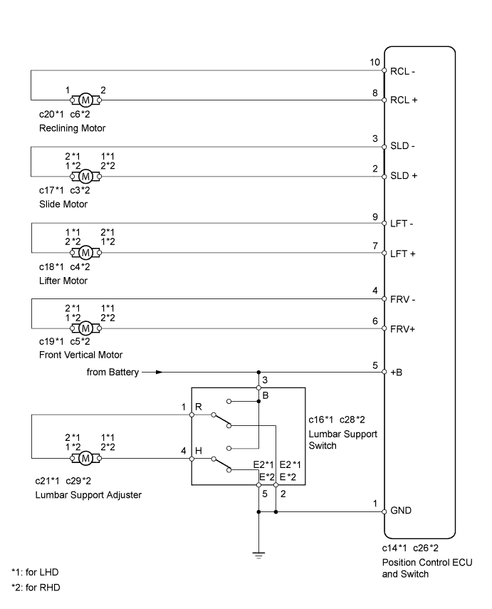
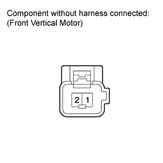
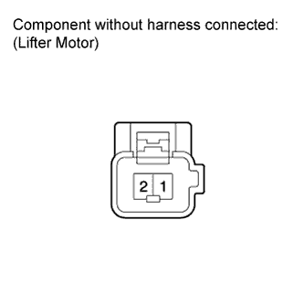
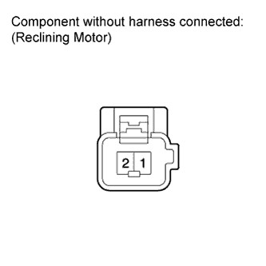
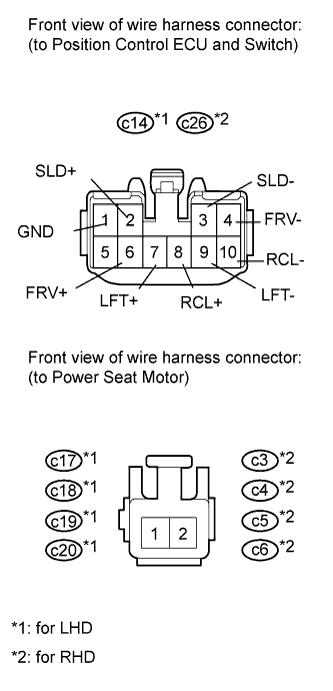
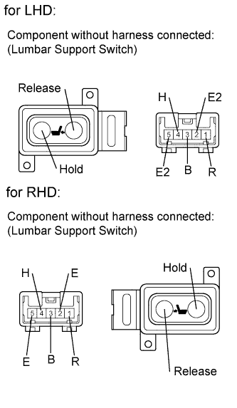
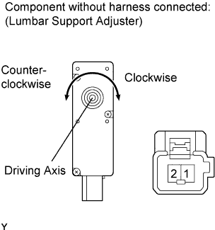
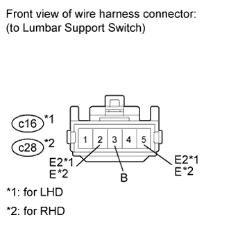

FRONT POWER SEAT CONTROL SYSTEM (w/ Seat Position Memory System) > One or more Power Seat Motors do not Operate |

| 1.CHECK FRONT POWER SEAT OPERATION |
Check that each function of the power seat operates normally by using the front power seat switches.
| Result | Proceed to |
| All front power seat switch operations are malfunctioning except lumbar support switch operation | A |
| Only lumbar support switch operation is malfunctioning | B |
|
| ||||
| A | |
| 2.READ VALUE USING INTELLIGENT TESTER (FRONT POWER SEAT SWITCH) |
Using the intelligent tester, read the Data List.
| Item | Measurement Item/Display (Range) | Normal Condition | Diagnostic Note |
| Reclining Rear | Reclining switch signal (Rearward) / ON or OFF | ON: Reclining switch (Rearward) on OFF: Reclining switch (Rearward) off | - |
| Reclining Front | Reclining switch signal (Forward) / ON or OFF | ON: Reclining switch (Forward) on OFF: Reclining switch (Forward) off | - |
| Front Vertical Down | Front vertical switch signal (Downward) / ON or OFF | ON: Front vertical switch (Downward) on OFF: Front vertical switch (Downward) off | - |
| Front Vertical Up | Front vertical switch signal (Upward) / ON or OFF | ON: Front vertical switch (Upward) on OFF: Front vertical switch (Upward) off | - |
| Lifter Switch Down | Lifter switch signal (Downward) / ON or OFF | ON: Lifter switch (Downward) on OFF: Lifter switch (Downward) off | - |
| Lifter Switch Up | Lifter switch signal (Upward) / ON or OFF | ON: Lifter switch (Upward) on OFF: Lifter switch (Upward) off | - |
| Slide Rear | Sliding switch signal (Rearward) / ON or OFF | ON: Sliding switch (Rearward) on OFF: Sliding switch (Rearward) off | - |
| Slide Front | Sliding switch signal (Forward) / ON or OFF | ON: Sliding switch (Forward) on OFF: Sliding switch (Forward) off | - |
|
| ||||
| OK | |
| 3.PERFORM ACTIVE TEST USING INTELLIGENT TESTER (FRONT POWER SEAT MOTOR) |
Using the intelligent tester, perform the Active Test.
| Tester Display | Test Part | Control Range | Diagnostic Note |
| Seat Reclining | Seat reclining operation | Front / OFF / Rear | - |
| Front Vertical Operation | Seat front vertical operation | Up / OFF / Down | - |
| Lifter Operation | Seat lifter operation | Up / OFF / Down | - |
| Seat Slide Operation | Seat sliding operation | Front / OFF / Rear | - |
|
| ||||
| OK | ||
| ||
| 4.INSPECT FRONT SEAT ASSEMBLY (FRONT POWER SEAT MOTOR) |
Remove the front seat assembly LH (for LHD) (Click here).
Remove the front seat assembly RH (for RHD) (Click here).
Check operation of the slide motor.
Check if the seat moves smoothly when the battery is connected to the slide motor connector terminals.
| Measurement Condition | Specified Condition |
| Battery positive (+) → 1 Battery negative (-) → 2 | Forward |
| Battery positive (+) → 2 Battery negative (-) → 1 | Rearward |
| Measurement Condition | Specified Condition |
| Battery positive (+) → 2 Battery negative (-) → 1 | Forward |
| Battery positive (+) → 1 Battery negative (-) → 2 | Rearward |
 |
Check operation of the front vertical motor.
Check if the seat moves smoothly when the battery is connected to the front vertical motor connector terminals.
| Measurement Condition | Specified Condition |
| Battery positive (+) → 1 Battery negative (-) → 2 | Upward |
| Battery positive (+) → 2 Battery negative (-) → 1 | Downward |
| Measurement Condition | Specified Condition |
| Battery positive (+) → 2 Battery negative (-) → 1 | Upward |
| Battery positive (+) → 1 Battery negative (-) → 2 | Downward |
 |
Check operation of the lifter motor.
Check if the seat moves smoothly when the battery is connected to the lifter motor connector terminals.
| Measurement Condition | Specified Condition |
| Battery positive (+) → 2 Battery negative (-) → 1 | Upward |
| Battery positive (+) → 1 Battery negative (-) → 2 | Downward |
| Measurement Condition | Specified Condition |
| Battery positive (+) → 1 Battery negative (-) → 2 | Upward |
| Battery positive (+) → 2 Battery negative (-) → 1 | Downward |
 |
Check operation of the reclining motor.
Check if the seat moves smoothly when the battery is connected to the reclining motor connector terminals.
| Measurement Condition | Specified Condition |
| Battery positive (+) → 2 Battery negative (-) → 1 | Forward |
| Battery positive (+) → 1 Battery negative (-) → 2 | Rearward |
| Result | Proceed to |
| OK | A |
| NG (for LHD) | B |
| NG (for RHD) | C |
|
| ||||
|
| ||||
| A | |
| 5.CHECK HARNESS AND CONNECTOR (POSITION CONTROL ECU AND SWITCH - POWER SEAT MOTOR) |
 |
Disconnect the c14*1 or c26*2 switch connector.
Disconnect the c17*1, c18*1, c19*1, c20*1 or c3*2, c4*2, c5*2, c6*2 motor connectors.
Measure the resistance according to the value(s) in the table below.
| Tester Connection | Condition | Specified Condition |
| c14-3 (SLD-) - c17-2 | Always | Below 1 Ω |
| c14-2 (SLD+) - c17-1 | Always | Below 1 Ω |
| c14-4 (FRV-) - c19-2 | Always | Below 1 Ω |
| c14-6 (FRV+) - c19-1 | Always | Below 1 Ω |
| c14-9 (LFT-) - c18-1 | Always | Below 1 Ω |
| c14-7 (LFT+) - c18-2 | Always | Below 1 Ω |
| c14-10 (RCL-) - c20-1 | Always | Below 1 Ω |
| c14-8 (RCL+) - c20-2 | Always | Below 1 Ω |
| c14-1 (GND) - Body ground | Always | Below 1 Ω |
| c14-3 (SLD-) or c17-2 - Body ground | Always | 10 kΩ or higher |
| c14-2 (SLD+) or c17-1 - Body ground | Always | 10 kΩ or higher |
| c14-4 (FRV-) or c19-2 - Body ground | Always | 10 kΩ or higher |
| c14-6 (FRV+) or c19-1 - Body ground | Always | 10 kΩ or higher |
| c14-9 (LFT-) or c18-1 - Body ground | Always | 10 kΩ or higher |
| c14-7 (LFT+) or c18-2 - Body ground | Always | 10 kΩ or higher |
| c14-10 (RCL-) or c20-1 - Body ground | Always | 10 kΩ or higher |
| c14-8 (RCL+) or c20-2 - Body ground | Always | 10 kΩ or higher |
| Tester Connection | Condition | Specified Condition |
| c26-3 (SLD-) - c3-1 | Always | Below 1 Ω |
| c26-2 (SLD+) - c3-2 | Always | Below 1 Ω |
| c26-4 (FRV-) - c5-1 | Always | Below 1 Ω |
| c26-6 (FRV+) - c5-2 | Always | Below 1 Ω |
| c26-9 (LFT-) - c4-2 | Always | Below 1 Ω |
| c26-7 (LFT+) - c4-1 | Always | Below 1 Ω |
| c26-10 (RCL-) - c6-1 | Always | Below 1 Ω |
| c26-8 (RCL+) - c6-2 | Always | Below 1 Ω |
| c26-1 (GND) - Body ground | Always | Below 1 Ω |
| c26-3 (SLD-) or c3-1 - Body ground | Always | 10 kΩ or higher |
| c26-2 (SLD+) or c3-2 - Body ground | Always | 10 kΩ or higher |
| c26-4 (FRV-) or c5-1 - Body ground | Always | 10 kΩ or higher |
| c26-6 (FRV+) or c5-2 - Body ground | Always | 10 kΩ or higher |
| c26-9 (LFT-) or c4-2 - Body ground | Always | 10 kΩ or higher |
| c26-7 (LFT+) or c4-1 - Body ground | Always | 10 kΩ or higher |
| c26-10 (RCL-) or c6-1 - Body ground | Always | 10 kΩ or higher |
| c26-8 (RCL+) or c6-2 - Body ground | Always | 10 kΩ or higher |
|
| ||||
| OK | ||
| ||
| 6.INSPECT LUMBAR SUPPORT SWITCH |
 |
Remove the lumbar support switch (Click here).
Measure the resistance according to the value(s) in the table below.
| Tester Connection | Switch Condition | Specified Condition |
| 3 (B) - 4 (H) | Hold | Below 1 Ω |
| 1 (R) - 2 (E2) | ||
| 4 (H) - 5 (E2) | Off | |
| 1 (R) - 2 (E2) | ||
| 4 (H) - 5 (E2) | Release | |
| 1 (R) - 3 (B) |
| Tester Connection | Switch Condition | Specified Condition |
| 3 (B) - 4 (H) | Hold | Below 1 Ω |
| 1 (R) - 2 (E) | ||
| 4 (H) - 5 (E) | Off | |
| 1 (R) - 2 (E) | ||
| 4 (H) - 5 (E) | Release | |
| 1 (R) - 3 (B) |
|
| ||||
| OK | |
| 7.INSPECT LUMBAR SUPPORT ADJUSTER ASSEMBLY |
 |
Remove the lumbar support adjuster (Click here).
Check operation of the lumbar support adjuster.
Check that the lumbar support adjuster moves smoothly when the battery is connected to the lumbar support adjuster motor connector terminals.
| Measurement Condition | Specified Condition |
| Battery positive (+) → 1 Battery negative (-) → 2 | Clockwise |
| Battery positive (+) → 2 Battery negative (-) → 1 | Counterclockwise |
| Measurement Condition | Specified Condition |
| Battery positive (+) → 2 Battery negative (-) → 1 | Clockwise |
| Battery positive (+) → 1 Battery negative (-) → 2 | Counterclockwise |
|
| ||||
| OK | |
| 8.CHECK HARNESS AND CONNECTOR (LUMBAR SUPPORT SWITCH - BATTERY AND BODY GROUND) |
 |
Disconnect the c16*1 or c28*2 switch connector.
Measure the voltage according to the value(s) in the table below.
| Tester Connection | Condition | Specified Condition |
| c16-3 (B) - Body ground | Always | 11 to 14 V |
| Tester Connection | Condition | Specified Condition |
| c28-3 (B) - Body ground | Always | 11 to 14 V |
Measure the resistance according to the value(s) in the table below.
| Tester Connection | Condition | Specified Condition |
| c16-5 (E2) - Body ground | Always | Below 1 Ω |
| c16-2 (E2) - Body ground |
| Tester Connection | Condition | Specified Condition |
| c28-5 (E) - Body ground | Always | Below 1 Ω |
| c28-2 (E) - Body ground |
|
| ||||
| OK | ||
| ||